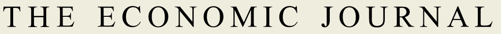

EJ Checklist For Authors

Before submitting your final version, please check that you have complied with the following. We ask that you tick the relevant boxes, sign and submit this form along with folders 1-paper and 2-appendix as detailed below via Editorial Express. After successful submission, the Data Editor will invite you to submit your replication package in a separate step. You will confirm below that your replication package complies with the required structure and content.
Thank you!
1. Style Guide for Paper
2. Replication Package Guide
2.0. Folder Structure of Replication package
You are requested to submit a single zip file called MSXXXXXXX-replication.zip which contains all contents of your replication package (contents detailed below).
The folder structure needs to follow strictly the following template (please name your folders in this exact way. Notice there are no spaces, and no capital letters in those folder names):
├── 1-paper
├── 2-appendices
├── 3-replication-package.zip
└── 4-confidential-data-not-for-publication.zip (Optional)2.1. Folder 1-paper
-
I confirm that
1-papercontains:
2.2. Folder 2-appendix (if applicable)
I confirm that 2-appendix contains - if applicable:
2.3. Folder 3-replication-package.zip (must be .zip)
I confirm that 3-replication-package.zip contains:
2.4. Folder 4-confidential-data-not-for-publication.zip (if applicable)
Optional: include only the restricted data if an exemption to the Data and Code Availability Policy have been granted to you and you are providing the replication team with temporary access to the data; all codes and unrestricted data should go to folder 3-replication-package.zip.
3. Plagiarism and Reproducibility Checks
I understand that the files submitted will be checked for plagiarism and that any code and data submitted will be checked for replicability of the results appearing in the paper, before the paper is finally accepted.
Date: ________________________
Signature: _______________________